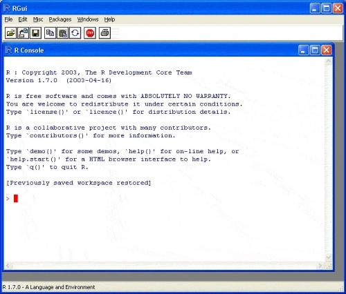
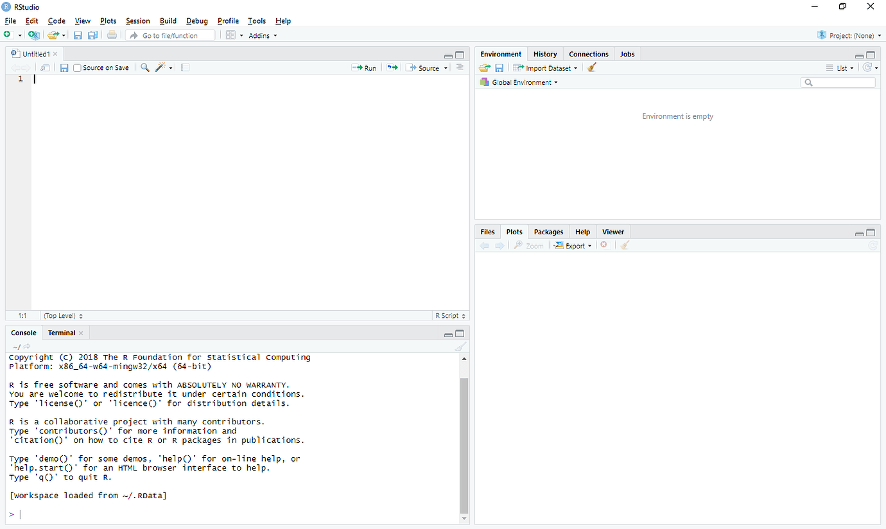

Overarching goal: to develop a general and basic introduction to R programming–In other words, the goal of this module is to present basic aspects for anyone to be free of initial fear and start using R to perform data analysis.
Note
Every learning process becomes more effective when theory is combined with practice; in this sense, I strongly recommend that you follow the exercises in this module at the same time that you run the commands on your computer and not just read them passively.
Comes with its own GUI on Windows, Mac, and Linux, but it’s not great!
RStudio is software to help you efficiently write R code
Called an integrated development environment (IDE)
Why R?
R is a language and a statistical programming environment and graphics or also called an “object-oriented programming”.
This means that when using R you are creating and manipulating objects on your screen. Simply put, you are telling your computer to perform a specific task rather than simply press a button (black box paradox).
Note
The main advantage of R is that the user has control over what is happening and also has a full understanding of what they want before performing any analysis.
Why R?
With R, it is possible to manipulate and analyze data, make graphics and write from small commands to entire programs.
R is the open version of the S language, created by Bell’s Lab in 1980. Interestingly, the S language is super popular among different areas of science and is the base for commercial products such as SPSS, STATA, and SAS, among others. Thus, if we have to add another advantage to R, is that R is an open language and free!
Why R?
R has a very large community, so there are tons of packages and it’s easy to find help.
R is a programming language, so you can do almost anything you want with it (you don’t have to rely on whatever is implemented in the software you use).
R can handle almost any data format.
R makes it easy to create reproducible analysis.
Find a job! R skills transfer well to other programming languages, and many stats-related jobs require proficiency in R.
Cite R
Note
When we are reporting our results in the form of a report, scientific paper, or any kind of document, we need to cite the software used. The easiest way to get the proper reference to cite R is by using the internal function citation().
To cite R in publications use:
R Core Team (2023). _R: A Language and Environment for Statistical
Computing_. R Foundation for Statistical Computing, Vienna, Austria.
<https://www.R-project.org/>.
A BibTeX entry for LaTeX users is
@Manual{,
title = {R: A Language and Environment for Statistical Computing},
author = {{R Core Team}},
organization = {R Foundation for Statistical Computing},
address = {Vienna, Austria},
year = {2023},
url = {https://www.R-project.org/},
}
We have invested a lot of time and effort in creating R, please cite it
when using it for data analysis. See also 'citation("pkgname")' for
citing R packages.
What about RStudio?
RStudio is an integrated development environment (IDE) for R. With RStudio you can:
Organize your code, output, plots, and objects.
View and explore data and objects.
Interact with git and github.
Write and edit other languages–e.g., python, C++, and more!
Explore R and RStudio
Open

Explore R and RStudio
Open

Getting Started
In RStudio choose File > New File > R Script.
Then, let’s get oriented with the interface:
Top left: Code editor panel (R script), data viewer (browse with tabs)
Top right: Console for running code (> prompt)
Bottom left: List of objects in environment, code history tab.
Bottom right: Browsing files, viewing plots, managing packages, and viewing help files.
Running code
There are different ways to run your code:
Highlight lines in the editor window and click Run
Hit Ctrl+Enter or ⌘+Enter
Tip
To run a specific line of code, you just need to place the cursor on a line you want to run and hit Ctrl+Enter or ⌘+Enter.
Working directory
First of all, we need to know WHERE are we working at. In other words, our working directory. To get information that information we just need to type getwd() in the script or the console.
If the working directory is not the correct one, we just need to order R to SET the correct address. To do that we use function setwd()
Tip
When using the setwd() function, we need to use quotation marks to specify the correct address. For example: setwd(“Documents/GitHub/BiodiversityScience/Spring2024/Lab_0_R-intro”).
Working directory structure
For training purposes, we will create a working directory structure where the main folder is our current working environment, so we will create a series of subfolders where we store, the data, the scripts and whatever we want… To do that we will use the function dir.create(). Let’s practice!
Code
dir.create("Intro_R") # this folder will be your main folder.dir.create("Intro_R/data") # folder that store the data dir.create("Intro_R/r_scripts") # folder that store the scripts used in the coursedir.create("Intro_R/figures") # folder that store the figures created in the coursedir.create("Intro_R/results") # The resultsdir.create("Intro_R/Temp")
Caution
Every time you use R you will need to check your working directory to avoid errors.
The question mark “?” or the help function
Maybe, the most important (at least for Jesús) function of R is help or ?. Using help or the question mark, we can ask to R about almost anything (sadly we can’t order pizza, yet)… so, let’s practice!
Code
help("logarithm")?log??log
Tip
Other important and useful functions in R are: head(), tail(), dim(), str(), summary(), names(), class(), rm(), save(), saveRDS(), readRDS(), load(), source(), all these simple functions will help us to understand our data.
Objects: creation and manipulation
In R you can create and manipulate different kind of data, from a simple numeric vector to complex spatial and/or phylogenetic DataFrames. The main six kinds of objects that you can create and manipulate in R, are:
Vectors (numeric, character, factor, logic)
Matrices
DataFrames
Lists
Arrays
Functions
Objects: Vectors
Let’s start with Vectors. Vectors are the basic object in R and basically, contains elements of the same type (e.g., numbers, characters). Within vector exist four types: numeric, character, factor, and logic.
Vectors: numeric vectors
Code
a <-10# numeric value b <-c(1, 2, 3, 4, 5) # numeric vectorclass(b) # ask to R which type of object is bseq_test <-seq(from =1, to =20, by =2) # Here is a sequence of numbers from 1 to 20, every two numberssample(seq_test, 2, replace =TRUE) # Sort two numbers within the object seq_testrep_test <-rep(1:2, c(10, 3)) # Repeat the number one, ten times and the number 2 three timesseq_test_v2 <-c(1:10) # Create a sequence of 1 to 10. What is the difference with the "seq_test" vector? length(seq_test_v2) # Length of the object exampleaa <-length(seq_test_v2) # What we are doing in here?str(seq_test) # Look at the structure of the data
Vectors: character vectors
We can also create vector of characters, which mean that instead of storing numbers we can store characters.
Explore the character vector using the function str()
str(cbs_departments)
Note
Create a different character vector, for example, using the names of your peers.
The function concatenate or simply c()
Combine multiple elements to form a vector.
Vectors: logic vectors
This kind of vector is super useful when the purpose is to create or build functions. The elements of a logic vector are TRUE, FALSE, NA (not available).
Code
is.factor(seq_test) # Is it a factor? (FALSE)is.matrix(seq_test) # Is it a matrix? (FALSE)is.vector(seq_test) # Is it a vector? (TRUE)is.numeric(seq_test) # Is it a numeric vector? (TRUE)a <1# 'a' is lower than 1? (FALSE)a ==1# 'a' is equal to 1? (TRUE)a >=1# 'a' is higher or equal to 1? (TRUE)a !=2# the object 'a' is different of two? (TRUE) (!= negation)
Vectors: factor vectors
A factor is useful to create categorical variables, that is very common in statistical analyses, such as the Anova.
Code
dt_f <-factor(c("small", "medium", "large"))is.factor(dt_f) # Check if the object is correct.
Matrix
A matrix is bidimensional arrangement of vectors, where the vectors need to be of the same type, that is, two or more numeric vectors, or two or more character vectors.
Code
matx <-matrix(1:100, nrow =20)rownames(matx) <- LETTERS[1:20] # names of the rowscolnames(matx) <-c("Sample01", "Sample02", "Sample03", "Sample04", "Sample05") # names of the columns or headers## Inspect the matrixmatxclass(matx) # Ask, which kind of data is?
Matrix - getting access to the data
Code
head(matx) # first rows of your datatail(matx) # last rows of your datamatx[, 1] # We can use brackets to select a specific columnmatx[1, ] # We can use brackets to select a specific row str(matx) # structure of the matrixsummary(matx) # summary statistics of the data in the matrix
Tip
In general, when we are exploring our data for example using head() the function will return only the 6 first rows of our matrix, however, we can add another argument into the function. For example, head(matx, 10), just add the number 10 after the comma and is possible to see the first 10 lines. This simple operation is useful specially when our matrix is large >100 rows.
DataFrames
The difference between a matrix and a dataframe is that a dataframe can handle different types of vectors. You can explore more about the dataframes asking R ?data.frame. Let’s create a data frame and explore its properties.
Code
df <-data.frame(species =c("rufus", "cristatus", "albogularis", "paraguayae"), habitat =factor(c("forest", "savanna", "urban", "transition")), high =c(10, 2, 7, 4), distance =c(3, 9, 5, 6))class(df)matx2 <-as.data.frame(matx) # We can also transform our matrix to a data frameclass(matx2) str(df)
Tip
In addition to the functions used to explore the data in the matrices, in dataframes we can also use the $ symbol to access to a specific column. For example, type in your console df$habitat
Lists
The list is an object that consists of an assembly of objects sorted in a hierarchical way. Here we will use the data previously created.
lst <-list(dt_f, df, matx)
We can now go ahead and inspect the list.
str(lst)
And also check if the object created is, in fact, a list.
class(lst)
Lists
Now, inspect the objects that are stored into our object lst. To do this, we just need to use two brackets [[]].
lst[[1]]
lst[[2]]
lst[[3]]
Note
At to this point, we have explored the most common objects in R. Understanding the structure of each class of objects (from vectors to lists) is maybe the most critical step to learning R.
Lists
Tip
We can also name each object of the a list and get access to a specific object by using the $ symbol.
names(lst) <-c("obj_factor", "obj_dataframe", "obj_matrix")names(lst) # explore the list's nameslst$obj_dataframe # get access to the dataframe
Note
Time for a break!
Let’s go outside and collect some data.
Data maniputation
As indicated before, using R you can handle different kind of information (from vectors to dataframes) and basically most of our data is usually stored in an Excel spreadsheet or in files that have the extension of .csv (comma-separated values file) or .txt (Text X Text or text file that contains unformatted text).
Most of these files are imported in R are data frames, but, as we were practicing, we now have the tools to handle or transform the information into different objects.
Tip
The function to import data to R is simple read.table() or read.csv(), and using these simple functions, you can import the data and transform it in other kind of objects. So, let’s practice!
Data maniputation
dat <-read.table("data/Sample.txt")dat2 <-read.table("data/Sample.txt", row.names =1, header =TRUE)dat3 <-read.csv("data/Sample.csv")class(dat)class(dat2)class(dat3)
Tip
You can also import your data using the same functions, but without specifying the address. Notice that I do not recommend this procedure as you can’t control the directory structure, but is useful when you just are exploring data.
dat5 <-na.omit(read.csv(file.choose()))
Data maniputation
You can also save your data from R using the function write.table() or write.csv(). Lets save the dat3Sample. Notice that always we need to specify the correct address, in our case we will save the data in the subolder Data.
In programming one of the most important tool is the loop AKA for. Basically, a loop runs for n number of steps in a previously defined statement.
The basic syntax structure of a loop is:
for (variable in vector) { "execute defined statements"}
Gentle intro to loops
When we are writing some piece of code it is common to use the loop variable i to determine the number of steps. Why not other letter?, well i is the first letter of the word iteration —duh! 😬🫣 Anyway, you can use any letter or word as a loop variable.
So, let’s take a look.
for (i in1:10) { cat(i, sep ="") # I want to print numbers form 1 to 10.}
12345678910
Gentle intro to loops
Notice that the number of steps is determined by the loop variable and in this example is a sequence of steps from 1 to 10, that correspond to the second element of the for loop, the vector.
You can modify the previous statement to obtain different results, for example:
for (i in1:10) { cat(i, sep ="\n")}
Gentle intro to loops
Or using a previous object:
for (i in5:length(seq_test)) { cat(i, sep ="\n")}
Gentle intro to loops
Or to make calculations
for (i in5:length(seq_test)) { b2 <- b^2 b3 <- b*2 b4 <- b+10}# Print the resultsb2b3b4
Gentle intro to loops
To finish very simple tutorial, we will tell R to welcome all of the members of the class.
# Create a vector with students namesBioSci_2024 <-c("Anna", "Olivia", "Hannah", "Mason", "Pedro")# Run loopfor (i in1:length(BioSci_2024)){ print(paste0("Hi ", BioSci_2024[i], ", welcome to the Intro to R 2024!"))Sys.sleep(3) # wait three seconds before the next iteration or name}